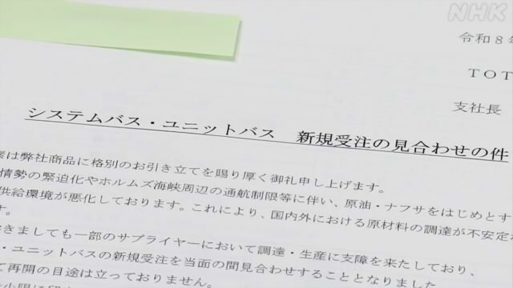
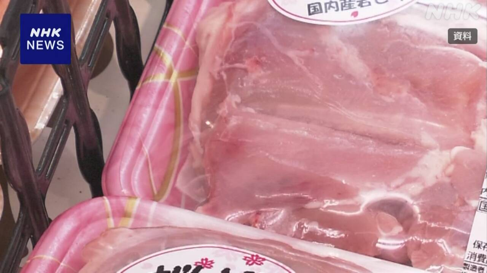

最新ニュース
1️⃣ 京都府 亡くなった小学生に何があったか警察が調べている
どこにいるかわからなくなっていた京都府の小学生の安達結希さんが、13日見つかりました。
学校から2kmぐらいの山の中で亡くなっていました。
警察が調べると、結希さんはいなくなった先月の終わりごろに、亡くなったことがわかりました。
靴は履いていませんでした。リュックサックなどは別の場所で見つかっています。
警察は、誰かが結希さんを山に運んだと考えて、何があったか調べています。
2️⃣ 新しいお風呂などを作ることが難しくなっている

TOTOという会社は、石油から取れる「ナフサ」を使ってお風呂やトイレを作っています。
しかし、いまナフサが足りなくて、新しいお風呂などを作ることが難しくなっています。
アメリカなどとイランの戦いが続いて、中東の国から輸入がしにくいためです。
TOTOは、お風呂の注文を新しく受けることを止めました。
家を建てる会社や直す会社も困っています。
家を建てるときに使う壁や、壁に塗る塗料などもナフサから作ります。
会社の人は「これからが心配です。できるだけお客さんに迷惑をかけないようにしたいです」と話していました。
3️⃣ 札幌市 外国にいる人をバスの運転手に育てる
いま、多くの市や町でバスの運転手が足りなくて困っています。
このため札幌市では、外国にいる人を運転手に育てることを考えています。
ベトナムで運転手になりたい人を集めて、1年ぐらい日本語の勉強などをしてもらいます。そのあと日本に来て、バスの運転免許を取ってもらいます。お金は、札幌市とバスの会社が出します。
運転手の仕事をするのは10人ぐらいです。日本の生活や文化についても勉強してもらいたいと考えています。
4️⃣ 鶏肉の値段が上がっている

鶏肉の値段が上がっています。3月は、もも肉100gが150円ぐらいでした。いつもの年に比べて10%ぐらい高くなっています。
値段が上がっている理由について専門家は、お金をあまり使いたくない人が増えているためではないかと言っています。鶏肉は、牛肉や豚肉より安いため、人気になっていて値段が上がっているようです。
ブラジルやタイなど外国から輸入する鶏肉も高くなっています。どの国も働く人に払うお金が増えていることや、円が安くなっていることが理由です。
- 〜ている / 〜でいる
- 〜から
- 〜中
- 〜くらい / 〜ぐらい
- 〜こと
- 〜など
- 〜がある / 〜がいる
- 〜という
- 〜なくて
- 〜ため
- 〜にくい
- 〜ようにする
- 〜だけ
- 〜ように
- 〜ても / 〜でも
- 〜てもらう / 〜でもらう
- 〜になる
- 〜後 / 〜あと
- 〜について
- 〜ではないか / 〜じゃないか
- 〜ようだ / 〜みたいだ
- 〜より
- 〜や〜など
vebaev.github.io
Generated: 2026-04-15 13:41:54 UTC